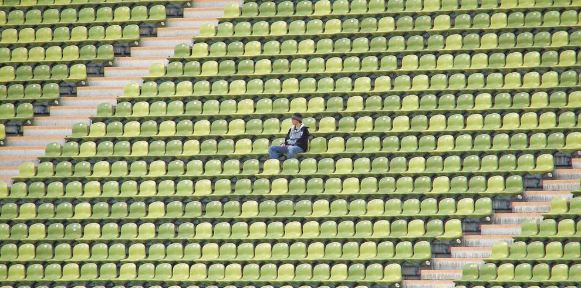

Tiempos Actuales
Inicio
Nacionales
Sucesos
Deportes
Espectaculos
Avisos
Ventas
Deportes
Carlos Alvarado: Volver al fútbol es el resultado del desempeño Costa Rica vrs Covid-19.
Final Alajuelense vs. Saprissa se suspende por pandemia del nuevo coronavirus.
Reanudación de fútbol ayuda a "salud mental", dice Alvarado.
Fútbol Nacional espera fecha para reanudar torneo partidos serán a puerta cerrada.
COVID-19: su impacto en el deporte y los negocios relacionados.

Costa Rica suspende sus ligas de fútbol debido al coronavirus.